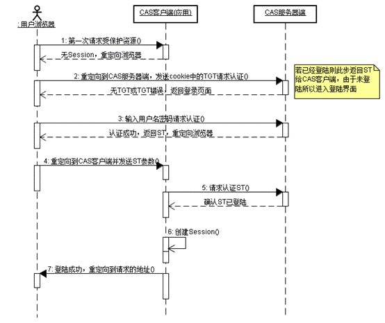
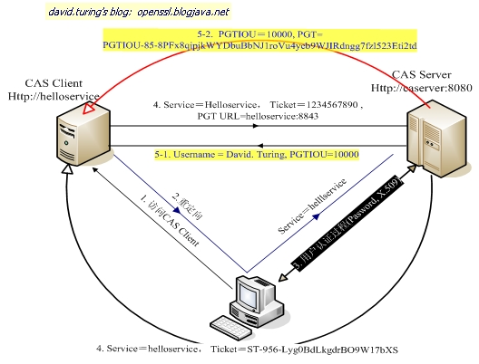
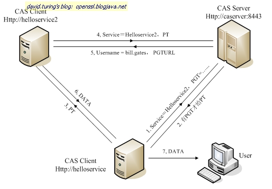

单点登录
CAS实现SSO单点登录原理
1. CAS简介
1.1. What is CAS？
CAS（Central Authentication Service） 是 Yale大学发起的一个企业级的、开源的项目，旨在为 Web 应用系统提供一种可靠的单点登录解决方法（属于Web SSO）。
CAS开始于2001年， 并在 2004年 12月正式成为JA-SIG的一个项目。
1.2. 主要特性
1、 开源的、多协议的SSO解决方案；Protocols：Custom Protocol、CAS、OAuth、OpenID、RESTful API、SAML1.1、SAML2.0等。
2、 支持多种认证机制：Active Directory、JAAS、JDBC、LDAP、X.509 Certificates等；
3、 安全策略：使用票据（Ticket）来实现支持的认证协议；
4、 支持授权：可以决定哪些服务可以请求和验证服务票据（Service Ticket）；
5、 提供高可用性：通过把认证过的状态数据存储在TicketRegistry组件中，这些组件有很多支持分布式环境的实现，如：BerkleyDB、Default 、EhcacheTicketRegistry、JDBCTicketRegistry、JBOSS TreeCache、JpaTicketRegistry、MemcacheTicketRegistry等；
6、 支持多种客户端： Java、 .Net、 PHP、 Perl、 Apache, uPortal等。
2. SSO单点登录原理
本文内容主要针对Web SSO。
2.1. 什么是SSO
单点登录（Single Sign-On ,简称SSO）是目前比较流行的服务于企业业务整合的解决方案之一，SSO 使得在多个应用系统中，用户只需要登录一次就可以访问所有相互信任的应用系统。
2.2. SSO原理
2.2.1. SSO体系中的角色
一般SSO体系主要角色有三种：
1、 User（多个）
2、 Web应用（多个）
3、 SSO认证中心（1个）
2.2.2. SSO实现模式的原则
SSO实现模式一般包括以下三个原则：
1、 所有的认证登录都在SSO认证中心进行；
2、 SSO认证中心通过一些方法来告诉 Web 应用当前访问用户究竟是不是已通过认证的用户；
3、 SSO 认证中心和所有的 Web 应用建立一种信任关系，也就是说web应用必须信任认证中心。（单点信任）
2.2.3. SSO主要实现方式
SSO的主要实现方式有：
1、 共享cookies
基于共享同域的cookie是Web刚开始阶段时使用的一种方式，它利用浏览同域名之间自动传递cookies机制，实现两个域名之间系统令牌传递问题；另外，关于跨域问题，虽然cookies本身不跨域，但可以利用它实现跨域的SSO。如：代理、暴露SSO令牌值等。
缺点：不灵活而且有不少安全隐患，已经被抛弃。
2、 Broker-based(基于经纪人)
这种技术的特点就是，有一个集中的认证和用户帐号管理的服务器。经纪人给被用于进一步请求的电子身份存取。中央数据库的使用减少了管理的代价，并为认证提供一个公共和独立的”第三方”。例如Kerberos、Sesame、IBM KryptoKnight（凭证库思想)等。Kerberos是由麻省理工大学发明的安全认证服务，已经被UNIX和Windows作为默认的安全认证服务集成进操作系统。
3、 Agent-based（基于代理人）
在这种解决方案中，有一个自动地为不同的应用程序认证用户身份的代理程序。这个代理程序需要设计有不同的功能。比如，它可以使用口令表或加密密钥来自动地将认证的负担从用户移开。代理人被放在服务器上面，在服务器的认证系统和客户端认证方法之间充当一个”翻译”。例如SSH等。
4、 Token-based
例如SecureID,WebID，现在被广泛使用的口令认证，比如FTP、邮件服务器的登录认证，这是一种简单易用的方式，实现一个口令在多种应用当中使用。
5、 基于网关
6、 基于SAML
SAML(Security Assertion Markup Language，安全断言标记语言）的出现大大简化了SSO，并被OASIS批准为SSO的执行标准。开源组织OpenSAML 实现了 SAML 规范。
3. CAS的基本原理
3.1. 结构体系
从结构体系看，CAS包括两部分：CAS Server和CAS Client。
3.1.1. CAS Server
CAS Server负责完成对用户的认证工作, 需要独立部署, CAS Server 会处理用户名 / 密码等凭证 (Credentials)。
3.1.2. CAS Client
负责处理对客户端受保护资源的访问请求，需要对请求方进行身份认证时，重定向到CAS Server进行认证。（原则上，客户端应用不再接受任何的用户名密码等 Credentials）。
CAS Client 与受保护的客户端应用部署在一起，以 Filter 方式保护受保护的资源。
3.2. CAS原理和协议
3.2.1. 基础模式
基础模式SSO访问流程主要有以下步骤：
访问服务：SSO客户端发送请求访问应用系统提供的服务资源。
定向认证：SSO客户端会重定向用户请求到SSO服务器。
用户认证：用户身份认证。
发放票据：SSO服务器会产生一个随机的Service Ticket。
验证票据：SSO服务器验证票据Service Ticket的合法性，验证通过后，允许客户端访问服务。
传输用户信息：SSO服务器验证票据通过后，传输用户认证结果信息给客户端。
下面是CAS 最基本的协议过程：

基础协议图
如上图：CAS Client 与受保护的客户端应用部署在一起，以Filter方式保护Web应用的受保护资源，过滤从客户端过来的每一个Web请求，同时，CAS Client 会分析HTTP请求中是否包含请求Service Ticket( ST上图中的Ticket) ，如果没有，则说明该用户是没有经过认证的；于是CAS Client 会重定向用户请求到 CAS Server（Step 2），并传递Service（要访问的目的资源地址）。 Step 3是用户认证过程，如果用户提供了正确的Credentials， CAS Server随机产生一个相当长度、唯一、不可伪造的Service Ticket，并缓存以待将来验证，并且重定向用户到Service 所在地址（附带刚才产生的Service Ticket ）, 并为客户端浏览器设置一个Ticket Granted Cookie（TGC）；CAS Client 在拿到Service和新产生的 Ticket过后，在Step 5和Step6中与CAS Server进行身份核实，以确保 Service Ticket 的合法性。
在该协议中，所有与CAS Server的交互均采用SSL协议，以确保ST和TGC的安全性。协议工作过程中会有2次重定向的过程。但是 CAS Client与CAS Server之间进行Ticket验证的过程对于用户是透明的（使用HttpsURLConnection）。
CAS请求认证时序图如下：

3.2.1. CAS 如何实现 SSO
当用户访问另一个应用的服务再次被重定向到CAS Server的时候，CAS Server会主动获到这个TGC cookie，然后做下面的事情：
1) 如果User持有TGC且其还没失效，那么就走基础协议图的Step4，达到了 SSO 的效果；
2) 如果TGC失效，那么用户还是要重新认证 (走基础协议图的Step3)。
3.2.2. CAS代理模式
该模式形式为用户访问App1，App1又依赖于App2来获取一些信息，如：User –>App1 –>App2 。
这种情况下，假设App2也是需要对User进行身份验证才能访问，那么，为了不影响用户体验（过多的重定向导致User的IE窗口不停地闪动)，CAS引入了一种Proxy认证机制，即CAS Client可以代理用户去访问其它Web应用。
代理的前提是需要CAS Client拥有用户的身份信息(类似凭据)。之前我们提到的TGC是用户持有对自己身份信息的一种凭据，这里的PGT就是CAS Client端持有的对用户身份信息的一种凭据。凭借TGC，User可以免去输入密码以获取访问其它服务的Service Ticket，所以，这里凭借PGT，Web应用可以代理用户去实现后端的认证，而无需前端用户的参与。
下面为代理应用（helloService）获取PGT的过程：（注：PGTURL用于表示一个Proxy服务，是一个回调链接；PGT相当于代理证；PGTIOU为取代理证的钥匙，用来与PGT做关联关系；）

如上面的CAS Proxy图所示，CAS Client 在基础协议之上，在验证ST时提供了一个额外的PGT URL(而且是 SSL 的入口)给CAS Server，使得CAS Server可以通过PGT URL提供一个PGT给CAS Client。
CAS Client拿到了PGT(PGTIOU-85…..ti2td)，就可以通过PGT向后端Web应用进行认证。
下面是代理认证和提供服务的过程：

如上图所示，Proxy认证与普通的认证其实差别不大，Step1，2与基础模式的Step1,2几乎一样，唯一不同的是，Proxy模式用的是PGT而不是TGC，是Proxy Ticket（PT）而不是Service Ticket。
3.2.3. 辅助说明
CAS的SSO实现方式可简化理解为：1个Cookie和N个Session。CAS Server创建cookie，在所有应用认证时使用，各应用通过创建各自的Session来标识用户是否已登录。
用户在一个应用验证通过后，以后用户在同一浏览器里访问此应用时，客户端应用中的过滤器会在session里读取到用户信息，所以就不会去CAS Server认证。如果在此浏览器里访问别的web应用时，客户端应用中的过滤器在session里读取不到用户信息，就会去CAS Server的login接口认证，但这时CAS Server会读取到浏览器传来的cookie（TGC），所以CAS Server不会要求用户去登录页面登录，只是会根据service参数生成一个Ticket，然后再和web应用做一个验证ticket的交互而已。
3.3. 术语解释
CAS系统中设计了5中票据：TGC、ST、PGT、PGTIOU、PT。
Ø Ticket-granting cookie(TGC)：存放用户身份认证凭证的cookie，在浏览器和CAS Server间通讯时使用，并且只能基于安全通道传输（Https），是CAS Server用来明确用户身份的凭证；
Ø Service ticket(ST)：服务票据，服务的惟一标识码,由CAS Server发出（Http传送），通过客户端浏览器到达业务服务器端；一个特定的服务只能有一个惟一的ST；
Ø Proxy-Granting ticket（PGT）：由CAS Server颁发给拥有ST凭证的服务，PGT绑定一个用户的特定服务，使其拥有向CAS Server申请，获得PT的能力；
Ø Proxy-Granting Ticket I Owe You（PGTIOU）:作用是将通过凭证校验时的应答信息由CAS Server 返回给CAS Client，同时，与该PGTIOU对应的PGT将通过回调链接传给Web应用。Web应用负责维护PGTIOU与PGT之间映射关系的内容表；
Ø Proxy Ticket (PT)：是应用程序代理用户身份对目标程序进行访问的凭证；
其它说明如下：
Ø Ticket Granting ticket(TGT)：票据授权票据，由KDC的AS发放。即获取这样一张票据后，以后申请各种其他服务票据(ST)便不必再向KDC提交身份认证信息(Credentials)；
Ø Authentication service(AS) ———认证用服务，索取Credentials，发放TGT；
Ø Ticket-granting service (TGS) ———票据授权服务，索取TGT，发放ST；
Ø KDC( Key Distribution Center ) ———-密钥发放中心；
4. CAS安全性
CAS的安全性仅仅依赖于SSL。使用的是secure cookie。
4.1. TGC/PGT安全性
对于一个 CAS 用户来说，最重要是要保护它的TGC，如果TGC不慎被CAS Server以外的实体获得，Hacker能够找到该TGC，然后冒充CAS用户访问所有授权资源。PGT的角色跟TGC是一样的。
从基础模式可以看出， TGC是CAS Server通过SSL方式发送给终端用户，因此，要截取TGC难度非常大，从而确保CAS的安全性。
TGT的存活周期默认为120分钟。
4.2. ST/PT安全性
ST（Service Ticket）是通过Http传送的，因此网络中的其他人可以Sniffer到其他人的Ticket。CAS通过以下几方面来使ST变得更加安全（事实上都是可以配置的）：
1、 ST只能使用一次
CAS协议规定，无论 Service Ticket验证是否成功， CAS Server都会清除服务端缓存中的该Ticket，从而可以确保一个Service Ticket不被使用两次。
2、 ST在一段时间内失效
CAS规定ST只能存活一定的时间，然后CAS Server会让它失效。默认有效时间为5分钟。
3、 ST是基于随机数生成的
ST必须足够随机，如果ST生成规则被猜出，Hacker就等于绕过CAS认证，直接访问对应的服务。
集成方式
filter方式
MAVEN
1 | <dependency> |
web.xml
1 | <!-- 用于单点退出，该过滤器用于实现单点登出功能，可选配置--> |
原文作者: 何建军
版权声明: 转载请注明出处(必须保留作者署名及链接)